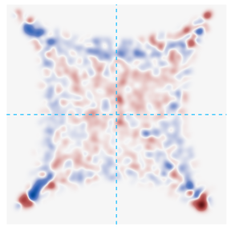
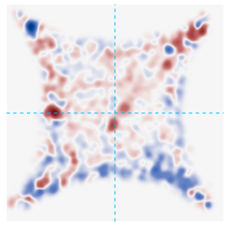
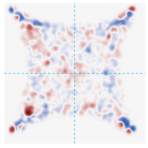
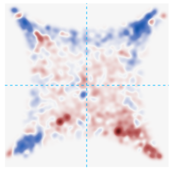
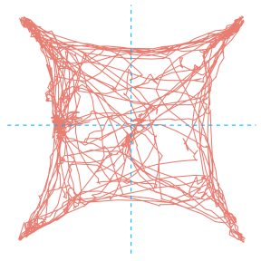
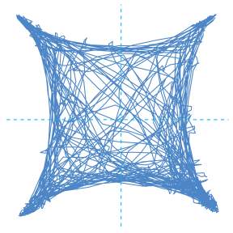
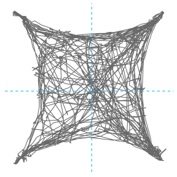
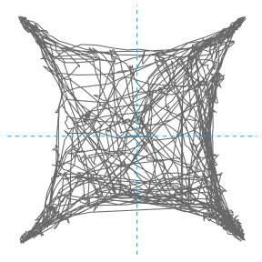

Last updated: 2024-01-13
Checks: 6 1
Knit directory:
CorticalAmygdala_pipelines/
This reproducible R Markdown analysis was created with workflowr (version 1.7.1). The Checks tab describes the reproducibility checks that were applied when the results were created. The Past versions tab lists the development history.
The R Markdown file has unstaged changes. To know which version of
the R Markdown file created these results, you’ll want to first commit
it to the Git repo. If you’re still working on the analysis, you can
ignore this warning. When you’re finished, you can run
wflow_publish to commit the R Markdown file and build the
HTML.
Great job! The global environment was empty. Objects defined in the global environment can affect the analysis in your R Markdown file in unknown ways. For reproduciblity it’s best to always run the code in an empty environment.
The command set.seed(20220906) was run prior to running
the code in the R Markdown file. Setting a seed ensures that any results
that rely on randomness, e.g. subsampling or permutations, are
reproducible.
Great job! Recording the operating system, R version, and package versions is critical for reproducibility.
Nice! There were no cached chunks for this analysis, so you can be confident that you successfully produced the results during this run.
Great job! Using relative paths to the files within your workflowr project makes it easier to run your code on other machines.
Great! You are using Git for version control. Tracking code development and connecting the code version to the results is critical for reproducibility.
The results in this page were generated with repository version 842d9c3. See the Past versions tab to see a history of the changes made to the R Markdown and HTML files.
Note that you need to be careful to ensure that all relevant files for
the analysis have been committed to Git prior to generating the results
(you can use wflow_publish or
wflow_git_commit). workflowr only checks the R Markdown
file, but you know if there are other scripts or data files that it
depends on. Below is the status of the Git repository when the results
were generated:
Ignored files:
Ignored: .DS_Store
Ignored: .RData
Ignored: .Rhistory
Ignored: .Rproj.user/
Ignored: analysis/.DS_Store
Ignored: data/behavior/
Ignored: data/projections/
Ignored: data/rnascope/
Ignored: data/sequencing/
Ignored: renv/library/
Ignored: renv/staging/
Untracked files:
Untracked: analysis/08A-merge_rd1_ATAC.Rmd
Untracked: analysis/behavior_02-epm_topography.Rmd
Untracked: analysis/behavior_03-openfield_topography.Rmd
Untracked: analysis/behavior_03-projections.Rmd
Untracked: analysis/behavior_04-4quad_genetics.Rmd
Untracked: analysis/behavior_04-projections_silencing_tmt.Rmd
Untracked: analysis/behavior_05-projections_silencing_2PE.Rmd
Untracked: analysis/behavior_06-genes_silencing_tmt.Rmd
Untracked: analysis/behavior_07-genes_silencing_2PE.Rmd
Untracked: analysis/behavior_09-epm_topography.Rmd
Untracked: analysis/behavior_10-epm_projections.Rmd
Untracked: analysis/behavior_12-openfield_projections.Rmd
Untracked: analysis/behavior_13-openfield_genes_silence.Rmd
Untracked: analysis/behavior_14-openfield_projections_silence.Rmd
Untracked: analysis/behavior_15-epm_genes_silence.Rmd
Untracked: analysis/projections.Rmd
Untracked: analysis/rnascope.Rmd
Untracked: analysis/sequencing-02B-initial_classification_rd1_RNA.Rmd
Untracked: analysis/sequencing-02C-reprocess_Neuron_rd1_RNA.Rmd
Untracked: analysis/sequencing-02D-Neuron_classification_rd1_RNA.Rmd
Untracked: analysis/sequencing-02E-reprocess_Glut_rd1_RNA.Rmd
Untracked: analysis/sequencing-02F-reprocess_GABA_rd1_RNA.Rmd
Untracked: analysis/sequencing-02G-Glut_classification_rd1_RNA.Rmd
Untracked: analysis/sequencing-03A-merge_filtered_RNA.Rmd
Untracked: analysis/sequencing-03B-initial_classification_RNA.Rmd
Untracked: analysis/sequencing-04-initial_deg.Rmd
Untracked: analysis/sequencing-04A-reprocess_Neuron_RNA.Rmd
Untracked: analysis/sequencing-04B-reprocess_Nonneuron_RNA.Rmd
Untracked: analysis/sequencing-04C-Neuron_classification_RNA.Rmd
Untracked: analysis/sequencing-04D-Nonneuron_classification_RNA.Rmd
Untracked: analysis/sequencing-05C-reprocess_Astro_RNA.Rmd
Untracked: analysis/sequencing-05L-Glut_classification_RNA.Rmd
Untracked: analysis/sequencing-05M-GABA_classification_RNA.Rmd
Untracked: analysis/sequencing-05N-Astro_classification_RNA.Rmd
Untracked: analysis/sequencing-05O-Macro_classification_RNA.Rmd
Untracked: analysis/sequencing-05P-NFOL_classification_RNA.Rmd
Untracked: analysis/sequencing-05Q-MOL_classification_RNA.Rmd
Untracked: analysis/sequencing-05R-ABC_classification_RNA.Rmd
Untracked: analysis/sequencing-05S-VLMC_classification_RNA.Rmd
Untracked: analysis/sequencing-05T-Immune_classification+labeling_RNA.Rmd
Untracked: analysis/sequencing-05X-reprocess_Astro.Rmd
Untracked: analysis/sequencing-05X-reprocess_GABAergic.Rmd
Untracked: analysis/sequencing-05X-reprocess_Glutamatergic.Rmd
Untracked: analysis/sequencing-05X-reprocess_Microglia.Rmd
Untracked: analysis/sequencing-05X-reprocess_Neuron.Rmd
Untracked: analysis/sequencing-05X-reprocess_Nonneuron.Rmd
Untracked: analysis/sequencing-05X-reprocess_OLG.Rmd
Untracked: analysis/sequencing-05X-reprocess_OPC.Rmd
Untracked: analysis/sequencing-05X-reprocess_VLMC.Rmd
Untracked: analysis/sequencing-06A-merged_classification_RNA.Rmd
Untracked: analysis/sequencing-06B-annotate_GABAergic.Rmd
Untracked: analysis/sequencing-06B-merged_deg_discovery_RNA.Rmd
Untracked: analysis/sequencing-07A-preprocess_aplCoA-1_P1_ATAC.Rmd
Untracked: analysis/sequencing-07B-preprocess_aplCoA-1_P2_ATAC.Rmd
Untracked: analysis/sequencing-07C-preprocess_aplCoA-2_ATAC.Rmd
Untracked: analysis/sequencing-07D-preprocess_pplCoA-1_P1_ATAC.Rmd
Untracked: analysis/sequencing-07E-preprocess_pplCoA-1_P2_ATAC.Rmd
Untracked: analysis/sequencing-07F-preprocess_pplCoA-2_ATAC.Rmd
Untracked: code/sequencing-color_scales.R
Untracked: code/sequencing-plot_functions.R
Untracked: code/sequencing_misc.R
Untracked: output/sequencing/
Unstaged changes:
Modified: analysis/behavior_01-4quad_topography.Rmd
Modified: analysis/sequencing-02A-merge_rd1_RNA.Rmd
Modified: analysis/sequencing-03-initial_classification.Rmd
Modified: analysis/sequencing-05A-reprocess_Glut_RNA.Rmd
Modified: code/behavior-plot_functions.R
Modified: renv/settings.dcf
Note that any generated files, e.g. HTML, png, CSS, etc., are not included in this status report because it is ok for generated content to have uncommitted changes.
These are the previous versions of the repository in which changes were
made to the R Markdown
(analysis/behavior_01-4quad_topography.Rmd) and HTML
(docs/behavior_01-4quad_topography.html) files. If you’ve
configured a remote Git repository (see ?wflow_git_remote),
click on the hyperlinks in the table below to view the files as they
were in that past version.
| File | Version | Author | Date | Message |
|---|---|---|---|---|
| Rmd | 842d9c3 | jamesrhowe | 2024-01-13 | Added 4-quad topography plots. |
This is a notebook that processes 4-quad data and outputs analyses and figures for publication.
# set up paths
topography_id <- params$dataset
topography_path <- params$path
source("code/behavior-refs.R")Loading required package: MASSLoading required package: tidyverse── Attaching core tidyverse packages ──────────────────────── tidyverse 2.0.0 ──
✔ dplyr 1.1.3 ✔ readr 2.1.4
✔ forcats 1.0.0 ✔ stringr 1.5.0
✔ ggplot2 3.4.3 ✔ tibble 3.2.1
✔ lubridate 1.9.3 ✔ tidyr 1.3.0
✔ purrr 1.0.2
── Conflicts ────────────────────────────────────────── tidyverse_conflicts() ──
✖ dplyr::filter() masks stats::filter()
✖ dplyr::lag() masks stats::lag()
✖ dplyr::select() masks MASS::select()
ℹ Use the conflicted package (<http://conflicted.r-lib.org/>) to force all conflicts to become errors
Loading required package: colorRamps
Loading required package: RColorBrewer
Loading required package: spatstat
Loading required package: spatstat.data
Loading required package: spatstat.geom
spatstat.geom 3.2-5
Attaching package: 'spatstat.geom'
The following object is masked from 'package:MASS':
area
Loading required package: spatstat.random
spatstat.random 3.1-6
Loading required package: spatstat.explore
Loading required package: nlme
Attaching package: 'nlme'
The following object is masked from 'package:dplyr':
collapse
spatstat.explore 3.2-3
Loading required package: spatstat.model
Loading required package: rpart
spatstat.model 3.2-6
Loading required package: spatstat.linnet
spatstat.linnet 3.1-1
spatstat 3.0-6
For an introduction to spatstat, type 'beginner'
Loading required package: viridis
Loading required package: viridisLite
Loading required package: cowplot
Attaching package: 'cowplot'
The following object is masked from 'package:lubridate':
stamp
Loading required package: grid
Attaching package: 'grid'
The following object is masked from 'package:spatstat.geom':
as.mask
Loading required package: gridExtra
Attaching package: 'gridExtra'
The following object is masked from 'package:dplyr':
combine
Loading required package: colorspace
Attaching package: 'colorspace'
The following object is masked from 'package:spatstat.geom':
coords
Loading required package: scales
Attaching package: 'scales'
The following object is masked from 'package:viridis':
viridis_pal
The following object is masked from 'package:spatstat.geom':
rescale
The following object is masked from 'package:purrr':
discard
The following object is masked from 'package:readr':
col_factor
Attaching package: 'zoo'
The following objects are masked from 'package:base':
as.Date, as.Date.numeric
Loading required package: carData
Attaching package: 'car'
The following object is masked from 'package:spatstat.model':
bc
The following object is masked from 'package:spatstat.geom':
ellipse
The following object is masked from 'package:dplyr':
recode
The following object is masked from 'package:purrr':
some
Loading required package: mvtnorm
Loading required package: survival
Loading required package: TH.data
Attaching package: 'TH.data'
The following object is masked from 'package:MASS':
geyser
Attaching package: 'rstatix'
The following object is masked from 'package:MASS':
select
The following object is masked from 'package:stats':
filter
Attaching package: 'ggpubr'
The following object is masked from 'package:cowplot':
get_legend
The following objects are masked from 'package:spatstat.geom':
border, rotatesource("code/behavior-misc_processes.R")
source("code/behavior-plot_functions.R")
topography_groups <- unlist(strsplit(Sys.glob(paste0(topography_path, "*")), topography_path))[c(FALSE, TRUE)]Names have to be given manually in most cases. Also for now copy into console because it does not load due to odd workspace issues. This loads all files in a directory and puts it into the correct format automatically.
data_topography <- read_stim_data("4quad", topography_groups, topography_path, topography_labels)
data_topography <- list(data_topography$`aplCoA-stim`, data_topography$`aplCoA-control`,
data_topography$`mplCoA-stim`, data_topography$`mplCoA-control`,
data_topography$`pplCoA-stim`, data_topography$`pplCoA-control`)
names(data_topography) <- c("aplCoA-stim", "aplCoA-control",
"mplCoA-stim", "mplCoA-control",
"pplCoA-stim", "pplCoA-control")baseline_array_topography <- transform_pi(data_topography, "baseline", "Quadrant", 1, 2400)
treatment_array_topography <- transform_pi(data_topography, "treatment", "Quadrant", 1, 2881)
pi_dataframe_topography_linear <- linear_array(data_topography, baseline_array_topography,
treatment_array_topography, "pi")
pi_group_topography <- group_array(data_topography,
baseline_array_topography,
treatment_array_topography, "pi")single_linear_plot(pi_dataframe_topography_linear, "eYFP", "difference_pi", eyfp_green,
ap_linear_pi_axes, ap_linear_pi_label)
| Version | Author | Date |
|---|---|---|
| 842d9c3 | jamesrhowe | 2024-01-13 |
single_linear_plot(pi_dataframe_topography_linear, "ChR2", "difference_pi", chr2_blue,
ap_linear_pi_axes, ap_linear_pi_label)
| Version | Author | Date |
|---|---|---|
| 842d9c3 | jamesrhowe | 2024-01-13 |
dual_linear_plot(pi_dataframe_topography_linear, "difference_pi",
ap_linear_pi_axes, ap_linear_pi_label)
| Version | Author | Date |
|---|---|---|
| 842d9c3 | jamesrhowe | 2024-01-13 |
# gives results for controls
ap_pi_ancova <- lm(difference_pi ~ ap_coords,
data = pi_dataframe_topography_linear[pi_dataframe_topography_linear$type == "eYFP",])
summary(ap_pi_ancova)
Call:
lm(formula = difference_pi ~ ap_coords, data = pi_dataframe_topography_linear[pi_dataframe_topography_linear$type ==
"eYFP", ])
Residuals:
Min 1Q Median 3Q Max
-0.42112 -0.14745 -0.01116 0.11436 0.35266
Coefficients:
Estimate Std. Error t value Pr(>|t|)
(Intercept) 0.17840 0.18118 0.985 0.334
ap_coords 0.09093 0.09593 0.948 0.352
Residual standard error: 0.1893 on 26 degrees of freedom
Multiple R-squared: 0.0334, Adjusted R-squared: -0.003775
F-statistic: 0.8985 on 1 and 26 DF, p-value: 0.3519ap_pi_ancova <- lm(difference_pi ~ ap_coords,
data = pi_dataframe_topography_linear[pi_dataframe_topography_linear$type == "ChR2",])
summary(ap_pi_ancova)
Call:
lm(formula = difference_pi ~ ap_coords, data = pi_dataframe_topography_linear[pi_dataframe_topography_linear$type ==
"ChR2", ])
Residuals:
Min 1Q Median 3Q Max
-0.49780 -0.17350 0.06307 0.17651 0.48271
Coefficients:
Estimate Std. Error t value Pr(>|t|)
(Intercept) -1.0885 0.3122 -3.487 0.002825 **
ap_coords -0.6610 0.1599 -4.133 0.000696 ***
---
Signif. codes: 0 '***' 0.001 '**' 0.01 '*' 0.05 '.' 0.1 ' ' 1
Residual standard error: 0.2682 on 17 degrees of freedom
Multiple R-squared: 0.5012, Adjusted R-squared: 0.4718
F-statistic: 17.08 on 1 and 17 DF, p-value: 0.0006957pi_dataframe_topography_linear$type <- relevel(pi_dataframe_topography_linear$type, ref = "eYFP")
ap_pi_ancova <- lm(difference_pi ~ ap_coords * type, data = pi_dataframe_topography_linear)
summary(ap_pi_ancova)
Call:
lm(formula = difference_pi ~ ap_coords * type, data = pi_dataframe_topography_linear)
Residuals:
Min 1Q Median 3Q Max
-0.49780 -0.14762 0.03744 0.13785 0.48271
Coefficients:
Estimate Std. Error t value Pr(>|t|)
(Intercept) 0.17840 0.21423 0.833 0.409588
ap_coords 0.09093 0.11343 0.802 0.427184
typeChR2 -1.26691 0.33733 -3.756 0.000515 ***
ap_coords:typeChR2 -0.75193 0.17518 -4.292 9.86e-05 ***
---
Signif. codes: 0 '***' 0.001 '**' 0.01 '*' 0.05 '.' 0.1 ' ' 1
Residual standard error: 0.2239 on 43 degrees of freedom
Multiple R-squared: 0.4221, Adjusted R-squared: 0.3818
F-statistic: 10.47 on 3 and 43 DF, p-value: 2.695e-05emtrends(ap_pi_ancova, pairwise ~ type, var = "ap_coords")$emtrends
type ap_coords.trend SE df lower.CL upper.CL
eYFP 0.0909 0.113 43 -0.138 0.320
ChR2 -0.6610 0.133 43 -0.930 -0.392
Confidence level used: 0.95
$contrasts
contrast estimate SE df t.ratio p.value
eYFP - ChR2 0.752 0.175 43 4.292 0.0001anterior_group_topography <- pi_group_topography[pi_group_topography$group
%in% c("aplCoA ChR2", "aplCoA eYFP"),] %>%
gather(key = "time", value = "PI", baseline_pi, treatment_pi) %>%
convert_as_factor(group, time)
levels(anterior_group_topography$time) <- c("OFF", "ON")
anterior_group_topography$group <- factor(anterior_group_topography$group,
levels = c("aplCoA eYFP", "aplCoA ChR2"))
levels(anterior_group_topography$group) <- c("eYFP", "ChR2")
anterior_group_topography %>%
group_by(group, time) %>%
get_summary_stats(PI, type = "mean_se")posterior_group_topography <- pi_group_topography[pi_group_topography$group
%in% c("pplCoA ChR2", "pplCoA eYFP"),] %>%
gather(key = "time", value = "PI", baseline_pi, treatment_pi) %>%
convert_as_factor(group, time)
levels(posterior_group_topography$time) <- c("OFF", "ON")
posterior_group_topography$group <- factor(posterior_group_topography$group,
levels = c("pplCoA eYFP", "pplCoA ChR2"))
levels(posterior_group_topography$group) <- c("eYFP", "ChR2")
posterior_group_topography %>%
group_by(group, time) %>%
get_summary_stats(PI, type = "mean_se")display_anova(anterior_group_topography, "PI")pairwise_comp_anova(anterior_group_topography, "PI")display_anova(posterior_group_topography, "PI")pairwise_comp_anova(posterior_group_topography, "PI")bg_twogroup(anterior_group_topography, rm_pi_label, anterior_color, ap_pi_axes, chr2_blue)
| Version | Author | Date |
|---|---|---|
| 842d9c3 | jamesrhowe | 2024-01-13 |
bg_twogroup(posterior_group_topography, rm_pi_label, posterior_color, ap_pi_axes, chr2_blue)
| Version | Author | Date |
|---|---|---|
| 842d9c3 | jamesrhowe | 2024-01-13 |
anterior_group_topography <- cbind.data.frame(anterior_group_topography$id[1: (length(rownames(anterior_group_topography))/2)],
anterior_group_topography$group[1: (length(rownames(anterior_group_topography))/2)],
anterior_group_topography$PI[(length(rownames(anterior_group_topography))/2)+1:
(length(rownames(anterior_group_topography))/2)] -
anterior_group_topography$PI[1: (length(rownames(anterior_group_topography))/2)])
colnames(anterior_group_topography) <- c("id", "group", "PI")
anterior_group_topography %>%
group_by(group) %>%
get_summary_stats(PI, type = "mean_se")posterior_group_topography <- cbind.data.frame(posterior_group_topography$id[1: (length(rownames(posterior_group_topography))/2)],
posterior_group_topography$group[1: (length(rownames(posterior_group_topography))/2)],
posterior_group_topography$PI[(length(rownames(posterior_group_topography))/2)+1:
(length(rownames(posterior_group_topography))/2)] -
posterior_group_topography$PI[1: (length(rownames(posterior_group_topography))/2)])
colnames(posterior_group_topography) <- c("id", "group", "PI")
posterior_group_topography %>%
group_by(group) %>%
get_summary_stats(PI, type = "mean_se")t.test(x = anterior_group_topography$PI[anterior_group_topography$group %in% "eYFP"],
y = anterior_group_topography$PI[anterior_group_topography$group %in% "ChR2"])
Welch Two Sample t-test
data: anterior_group_topography$PI[anterior_group_topography$group %in% "eYFP"] and anterior_group_topography$PI[anterior_group_topography$group %in% "ChR2"]
t = 2.8814, df = 8.1627, p-value = 0.02004
alternative hypothesis: true difference in means is not equal to 0
95 percent confidence interval:
0.05166312 0.45867110
sample estimates:
mean of x mean of y
0.01664451 -0.23852260 t.test(x = posterior_group_topography$PI[posterior_group_topography$group %in% "eYFP"],
y = posterior_group_topography$PI[posterior_group_topography$group %in% "ChR2"])
Welch Two Sample t-test
data: posterior_group_topography$PI[posterior_group_topography$group %in% "eYFP"] and posterior_group_topography$PI[posterior_group_topography$group %in% "ChR2"]
t = -3.7257, df = 16.275, p-value = 0.001793
alternative hypothesis: true difference in means is not equal to 0
95 percent confidence interval:
-0.7095722 -0.1953727
sample estimates:
mean of x mean of y
-0.05447212 0.39800037 bg_diff(anterior_group_topography, diff_pi_label, anterior_color, ap_pi_axes, chr2_blue)
| Version | Author | Date |
|---|---|---|
| 842d9c3 | jamesrhowe | 2024-01-13 |
bg_diff(posterior_group_topography, diff_pi_label, posterior_color, ap_pi_axes, chr2_blue)
| Version | Author | Date |
|---|---|---|
| 842d9c3 | jamesrhowe | 2024-01-13 |
baseline_array_topography_pd <- transform_pd(data_topography, "baseline", "PortDistance", 1, 2400)
treatment_array_topography_pd <- transform_pd(data_topography, "treatment", "PortDistance", 1, 2881)
pd_dataframe_topography_linear <- linear_array(data_topography, baseline_array_topography_pd,
treatment_array_topography_pd, "pd")
pd_group_topography <- group_array(data_topography,
baseline_array_topography_pd,
treatment_array_topography_pd, "pd")single_linear_plot(pd_dataframe_topography_linear, "eYFP", "difference_pd", eyfp_green,
ap_linear_pd_axes, ap_linear_pd_label)
| Version | Author | Date |
|---|---|---|
| 842d9c3 | jamesrhowe | 2024-01-13 |
single_linear_plot(pd_dataframe_topography_linear, "ChR2", "difference_pd", chr2_blue,
ap_linear_pd_axes, ap_linear_pd_label)
| Version | Author | Date |
|---|---|---|
| 842d9c3 | jamesrhowe | 2024-01-13 |
dual_linear_plot(pd_dataframe_topography_linear, "difference_pd",
ap_linear_pd_axes, ap_linear_pd_label)
| Version | Author | Date |
|---|---|---|
| 842d9c3 | jamesrhowe | 2024-01-13 |
ap_pd_ancova <- lm(difference_pd ~ ap_coords,
data = pd_dataframe_topography_linear[pd_dataframe_topography_linear$type == "eYFP",])
summary(ap_pd_ancova)
Call:
lm(formula = difference_pd ~ ap_coords, data = pd_dataframe_topography_linear[pd_dataframe_topography_linear$type ==
"eYFP", ])
Residuals:
Min 1Q Median 3Q Max
-3.4980 -1.4795 0.1111 1.0147 5.0981
Coefficients:
Estimate Std. Error t value Pr(>|t|)
(Intercept) -2.808 1.953 -1.438 0.162
ap_coords -1.316 1.034 -1.273 0.214
Residual standard error: 2.041 on 26 degrees of freedom
Multiple R-squared: 0.05866, Adjusted R-squared: 0.02245
F-statistic: 1.62 on 1 and 26 DF, p-value: 0.2143ap_pd_ancova <- lm(difference_pd ~ ap_coords,
data = pd_dataframe_topography_linear[pd_dataframe_topography_linear$type == "ChR2",])
summary(ap_pd_ancova)
Call:
lm(formula = difference_pd ~ ap_coords, data = pd_dataframe_topography_linear[pd_dataframe_topography_linear$type ==
"ChR2", ])
Residuals:
Min 1Q Median 3Q Max
-9.0533 -2.0368 0.1832 2.2620 5.3012
Coefficients:
Estimate Std. Error t value Pr(>|t|)
(Intercept) 7.018 4.244 1.653 0.1166
ap_coords 4.976 2.174 2.289 0.0352 *
---
Signif. codes: 0 '***' 0.001 '**' 0.01 '*' 0.05 '.' 0.1 ' ' 1
Residual standard error: 3.647 on 17 degrees of freedom
Multiple R-squared: 0.2355, Adjusted R-squared: 0.1906
F-statistic: 5.237 on 1 and 17 DF, p-value: 0.03518pd_dataframe_topography_linear$type <- relevel(pd_dataframe_topography_linear$type, ref = "eYFP")
ap_pd_ancova <- lm(difference_pd ~ ap_coords * type, data = pd_dataframe_topography_linear)
summary(ap_pd_ancova)
Call:
lm(formula = difference_pd ~ ap_coords * type, data = pd_dataframe_topography_linear)
Residuals:
Min 1Q Median 3Q Max
-9.0533 -1.5284 0.1566 1.4541 5.3012
Coefficients:
Estimate Std. Error t value Pr(>|t|)
(Intercept) -2.808 2.669 -1.052 0.29854
ap_coords -1.316 1.413 -0.932 0.35671
typeChR2 9.826 4.202 2.338 0.02408 *
ap_coords:typeChR2 6.293 2.182 2.884 0.00611 **
---
Signif. codes: 0 '***' 0.001 '**' 0.01 '*' 0.05 '.' 0.1 ' ' 1
Residual standard error: 2.789 on 43 degrees of freedom
Multiple R-squared: 0.2767, Adjusted R-squared: 0.2263
F-statistic: 5.484 on 3 and 43 DF, p-value: 0.002789emtrends(ap_pd_ancova, pairwise ~ type, var = "ap_coords")$emtrends
type ap_coords.trend SE df lower.CL upper.CL
eYFP -1.32 1.41 43 -4.17 1.53
ChR2 4.98 1.66 43 1.62 8.33
Confidence level used: 0.95
$contrasts
contrast estimate SE df t.ratio p.value
eYFP - ChR2 -6.29 2.18 43 -2.884 0.0061anterior_group_topography <- pd_group_topography[pd_group_topography$group
%in% c("aplCoA ChR2", "aplCoA eYFP"),] %>%
gather(key = "time", value = "PD", baseline_pd, treatment_pd) %>%
convert_as_factor(group, time)
levels(anterior_group_topography$time) <- c("OFF", "ON")
anterior_group_topography$group <- factor(anterior_group_topography$group,
levels = c("aplCoA eYFP", "aplCoA ChR2"))
levels(anterior_group_topography$group) <- c("eYFP", "ChR2")
anterior_group_topography %>%
group_by(group, time) %>%
get_summary_stats(PD, type = "mean_se")posterior_group_topography <- pd_group_topography[pd_group_topography$group
%in% c("pplCoA ChR2", "pplCoA eYFP"),] %>%
gather(key = "time", value = "PD", baseline_pd, treatment_pd) %>%
convert_as_factor(group, time)
levels(posterior_group_topography$time) <- c("OFF", "ON")
posterior_group_topography$group <- factor(posterior_group_topography$group,
levels = c("pplCoA eYFP", "pplCoA ChR2"))
levels(posterior_group_topography$group) <- c("eYFP", "ChR2")
posterior_group_topography %>%
group_by(group, time) %>%
get_summary_stats(PD, type = "mean_se")display_anova(anterior_group_topography, "PD")pairwise_comp_anova(anterior_group_topography, "PD")display_anova(posterior_group_topography, "PD")pairwise_comp_anova(posterior_group_topography, "PD")bg_twogroup_nobar(anterior_group_topography, rm_pd_label, anterior_color, ap_pd_axes, chr2_blue, 0)
| Version | Author | Date |
|---|---|---|
| 842d9c3 | jamesrhowe | 2024-01-13 |
bg_twogroup_nobar(posterior_group_topography, rm_pd_label, posterior_color, ap_pd_axes, chr2_blue, 0)
| Version | Author | Date |
|---|---|---|
| 842d9c3 | jamesrhowe | 2024-01-13 |
anterior_group_topography <- cbind.data.frame(anterior_group_topography$id[1: (length(rownames(anterior_group_topography))/2)],
anterior_group_topography$group[1: (length(rownames(anterior_group_topography))/2)],
anterior_group_topography$PD[(length(rownames(anterior_group_topography))/2)+1:
(length(rownames(anterior_group_topography))/2)] -
anterior_group_topography$PD[1: (length(rownames(anterior_group_topography))/2)])
colnames(anterior_group_topography) <- c("id", "group", "PD")
anterior_group_topography %>%
group_by(group) %>%
get_summary_stats(PD, type = "mean_se")posterior_group_topography <- cbind.data.frame(posterior_group_topography$id[1: (length(rownames(posterior_group_topography))/2)],
posterior_group_topography$group[1: (length(rownames(posterior_group_topography))/2)],
posterior_group_topography$PD[(length(rownames(posterior_group_topography))/2)+1:
(length(rownames(posterior_group_topography))/2)] -
posterior_group_topography$PD[1: (length(rownames(posterior_group_topography))/2)])
colnames(posterior_group_topography) <- c("id", "group", "PD")
posterior_group_topography %>%
group_by(group) %>%
get_summary_stats(PD, type = "mean_se")t.test(x = anterior_group_topography$PD[anterior_group_topography$group %in% "eYFP"],
y = anterior_group_topography$PD[anterior_group_topography$group %in% "ChR2"])
Welch Two Sample t-test
data: anterior_group_topography$PD[anterior_group_topography$group %in% "eYFP"] and anterior_group_topography$PD[anterior_group_topography$group %in% "ChR2"]
t = -3.061, df = 9.2138, p-value = 0.01319
alternative hypothesis: true difference in means is not equal to 0
95 percent confidence interval:
-4.6674162 -0.7085265
sample estimates:
mean of x mean of y
-0.7968036 1.8911677 t.test(x = posterior_group_topography$PD[posterior_group_topography$group %in% "eYFP"],
y = posterior_group_topography$PD[posterior_group_topography$group %in% "ChR2"])
Welch Two Sample t-test
data: posterior_group_topography$PD[posterior_group_topography$group %in% "eYFP"] and posterior_group_topography$PD[posterior_group_topography$group %in% "ChR2"]
t = 3.7975, df = 16.047, p-value = 0.001574
alternative hypothesis: true difference in means is not equal to 0
95 percent confidence interval:
1.967857 6.938686
sample estimates:
mean of x mean of y
0.4763243 -3.9769469 bg_diff(anterior_group_topography, diff_pd_label, anterior_color, ap_pd_axes_diff, chr2_blue)
| Version | Author | Date |
|---|---|---|
| 842d9c3 | jamesrhowe | 2024-01-13 |
bg_diff(posterior_group_topography, diff_pd_label, posterior_color, ap_pd_axes_diff, chr2_blue)
| Version | Author | Date |
|---|---|---|
| 842d9c3 | jamesrhowe | 2024-01-13 |
Generates a heatmap for each group. Sums all groups together at baseline and at treatment, and applies a gaussian smooth filter to both. It then subtracts the baseline from the treatment to identify the difference between treatment and baseline for all groups.
heatmap_list <- get_heatmap(data_topography)plot_heatmap(heatmap_array = heatmap_list$`aplCoA-control`)
| Version | Author | Date |
|---|---|---|
| 842d9c3 | jamesrhowe | 2024-01-13 |
plot_heatmap(heatmap_array = heatmap_list$`aplCoA-stim`)
| Version | Author | Date |
|---|---|---|
| 842d9c3 | jamesrhowe | 2024-01-13 |
plot_heatmap(heatmap_array = heatmap_list$`pplCoA-control`)
| Version | Author | Date |
|---|---|---|
| 842d9c3 | jamesrhowe | 2024-01-13 |
plot_heatmap(heatmap_array = heatmap_list$`pplCoA-stim`)
| Version | Author | Date |
|---|---|---|
| 842d9c3 | jamesrhowe | 2024-01-13 |
plot_legend <- plot_heatmap_legend(heatmap_list$`aplCoA-stim`, "horizontal")
grid.newpage()
grid.draw(plot_legend)
| Version | Author | Date |
|---|---|---|
| 842d9c3 | jamesrhowe | 2024-01-13 |
plot_legend <- plot_heatmap_legend(heatmap_list$`aplCoA-stim`, "vertical")
grid.newpage()
grid.draw(plot_legend)
| Version | Author | Date |
|---|---|---|
| 842d9c3 | jamesrhowe | 2024-01-13 |
plot_path(data_topography$`aplCoA-stim`$`aplCoA ChR2|1.46_az_020314_1_02.27.14-LR.txt`, anterior_color)
| Version | Author | Date |
|---|---|---|
| 842d9c3 | jamesrhowe | 2024-01-13 |
plot_path(data_topography$`pplCoA-stim`$`pplCoA ChR2|2.46_210504_plCoAp-ChR2-1-LR.txt`, posterior_color)
| Version | Author | Date |
|---|---|---|
| 842d9c3 | jamesrhowe | 2024-01-13 |
plot_path(data_topography$`aplCoA-control`$`aplCoA eYFP|1.22_210430_plCoAa-eYFP-10-LR.txt`, control_color)
| Version | Author | Date |
|---|---|---|
| 842d9c3 | jamesrhowe | 2024-01-13 |
plot_path(data_topography$`pplCoA-control`$`pplCoA eYFP|2.46_062321_plCoAp-eYFP-11-LR.txt`, control_color) 
| Version | Author | Date |
|---|---|---|
| 842d9c3 | jamesrhowe | 2024-01-13 |
sessionInfo()R version 4.3.1 (2023-06-16)
Platform: aarch64-apple-darwin20 (64-bit)
Running under: macOS Sonoma 14.1.2
Matrix products: default
BLAS: /Library/Frameworks/R.framework/Versions/4.3-arm64/Resources/lib/libRblas.0.dylib
LAPACK: /Library/Frameworks/R.framework/Versions/4.3-arm64/Resources/lib/libRlapack.dylib; LAPACK version 3.11.0
locale:
[1] en_US.UTF-8/en_US.UTF-8/en_US.UTF-8/C/en_US.UTF-8/en_US.UTF-8
time zone: America/Los_Angeles
tzcode source: internal
attached base packages:
[1] grid stats graphics grDevices datasets utils methods
[8] base
other attached packages:
[1] knitr_1.44 ggpubr_0.6.0 emmeans_1.8.8
[4] rstatix_0.7.2 multcomp_1.4-25 TH.data_1.1-2
[7] survival_3.5-7 mvtnorm_1.2-3 car_3.1-2
[10] carData_3.0-5 gmodels_2.18.1.1 zoo_1.8-12
[13] scales_1.2.1 colorspace_2.1-0 gridExtra_2.3
[16] cowplot_1.1.1 viridis_0.6.4 viridisLite_0.4.2
[19] spatstat_3.0-6 spatstat.linnet_3.1-1 spatstat.model_3.2-6
[22] rpart_4.1.19 spatstat.explore_3.2-3 nlme_3.1-163
[25] spatstat.random_3.1-6 spatstat.geom_3.2-5 spatstat.data_3.0-1
[28] RColorBrewer_1.1-3 colorRamps_2.3.1 lubridate_1.9.3
[31] forcats_1.0.0 stringr_1.5.0 dplyr_1.1.3
[34] purrr_1.0.2 readr_2.1.4 tidyr_1.3.0
[37] tibble_3.2.1 ggplot2_3.4.3 tidyverse_2.0.0
[40] MASS_7.3-60 workflowr_1.7.1
loaded via a namespace (and not attached):
[1] deldir_1.0-9 sandwich_3.0-2 rlang_1.1.1
[4] magrittr_2.0.3 git2r_0.32.0 compiler_4.3.1
[7] getPass_0.2-2 mgcv_1.9-0 gdata_2.19.0
[10] reshape2_1.4.4 callr_3.7.3 vctrs_0.6.3
[13] pkgconfig_2.0.3 fastmap_1.1.1 backports_1.4.1
[16] labeling_0.4.3 utf8_1.2.3 promises_1.2.1
[19] rmarkdown_2.25 tzdb_0.4.0 ps_1.7.5
[22] xfun_0.40 cachem_1.0.8 jsonlite_1.8.7
[25] goftest_1.2-3 later_1.3.1 spatstat.utils_3.0-3
[28] broom_1.0.5 R6_2.5.1 bslib_0.5.1
[31] stringi_1.7.12 estimability_1.4.1 jquerylib_0.1.4
[34] Rcpp_1.0.11 tensor_1.5 httpuv_1.6.11
[37] Matrix_1.6-1.1 splines_4.3.1 timechange_0.2.0
[40] tidyselect_1.2.0 rstudioapi_0.15.0 abind_1.4-5
[43] yaml_2.3.7 codetools_0.2-19 processx_3.8.2
[46] plyr_1.8.9 lattice_0.21-9 withr_2.5.1
[49] evaluate_0.22 polyclip_1.10-6 pillar_1.9.0
[52] BiocManager_1.30.22 whisker_0.4.1 renv_0.15.4
[55] generics_0.1.3 rprojroot_2.0.3 hms_1.1.3
[58] munsell_0.5.0 xtable_1.8-4 gtools_3.9.4
[61] glue_1.6.2 tools_4.3.1 ggsignif_0.6.4
[64] fs_1.6.3 cli_3.6.1 spatstat.sparse_3.0-2
[67] fansi_1.0.4 gtable_0.3.4 sass_0.4.7
[70] digest_0.6.33 farver_2.1.1 htmltools_0.5.6
[73] lifecycle_1.0.3 httr_1.4.7